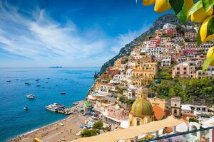
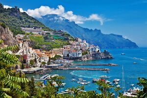
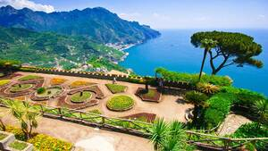
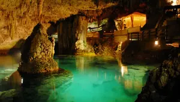

Iniziamo da Positano, la capitale della moda balneare chic. Qui, tra un tuffo nelle acque azzurre e un gelato artigianale, potete scoprire le boutique che vendono le famose "Positano Moda" - abiti leggeri e colorati che sembrano catturare l'essenza stessa del sole! E non dimenticate di salutare i pescatori che, al ritorno dalla pesca, vi racconteranno storie di tempeste e sirene, magari esagerando un po' per l'occasione.

Proseguendo lungo la strada serpeggiante, arriviamo ad Amalfi. Qui, il profumo dei limoni si mescola con quello del mare. Assaggiate il limoncello, ma attenzione a non esagerare, o rischiate di iniziare a parlare in rima! E se siete in cerca di un souvenir unico, la carta di Amalfi vi aspetta: resistente come la tradizione e profumata come i giardini che la circondano.

Più in alto, quasi a toccare il cielo, c'è Ravello. Sedetevi ai giardini di Villa Rufolo e lasciatevi trasportare dalla musica dei concerti estivi. Dicono che qui le note prendano il volo e danzino con le farfalle. E se vi capita di vedere un pianoforte che suona da solo, non spaventatevi: è solo il vento che si diverte a fare il musicista.
La Grotta dello Smeraldo: Un Mare di Risate
Non potete dire di aver visto la Costiera senza aver visitato La Grotta dello Smeraldo. Entrateci in barca e scoprite l'acqua che si tinge di un verde smeraldo così intenso che sembra uscito da una tavolozza di un pittore un po' pazzo. E mentre il barcaiolo vi indica le stalattiti e stalagmiti, cercate di indovinare a quali monumenti famosi assomigliano.
